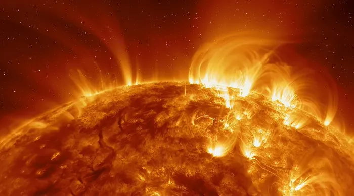
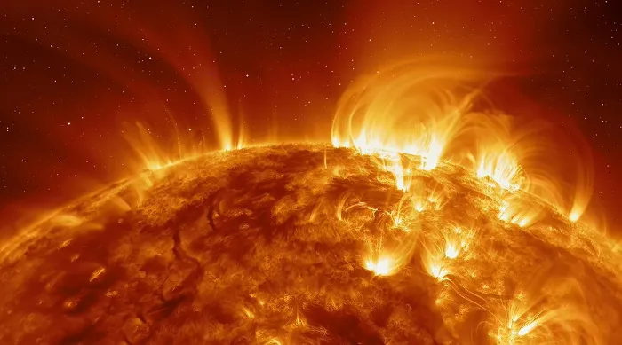

O Sol é uma estrela com um diâmetro de aproximadamente 1,4 milhão de quilômetros e uma massa de cerca de 1,989 x 10^30 quilogramas. Tem uma idade estimada de 4,6 bilhões de anos e é composto principalmente de hidrogênio (74%) e hélio (24%).
Suas temperaturas variam de cerca de 5.500 graus Celsius na superfície (fotosfera) a aproximadamente 15 milhões de graus Celsius no núcleo, onde reações nucleares geram sua energia.
O Sol é a fonte de luz e calor que sustenta a vida na Terra e desempenha um papel importante no clima espacial e nas comunicações do nosso planeta.